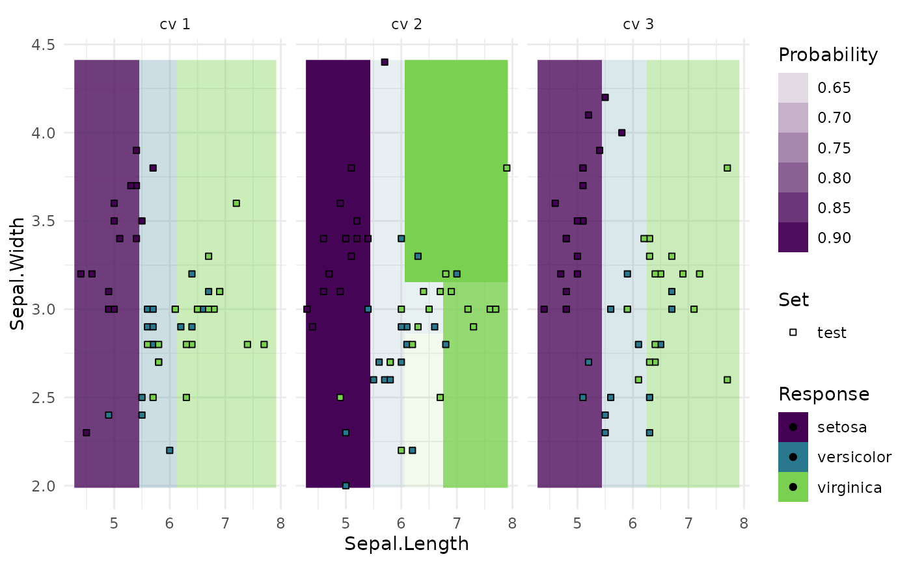

Generates plots for mlr3::ResampleResult, depending on argument type:
"boxplot"(default): Boxplot of performance measures."histogram": Histogram of performance measures."roc": ROC curve (1 - specificity on x, sensitivity on y). The predictions of the individual mlr3::Resamplings are merged prior to calculating the ROC curve (micro averaged). Requires package precrec."prc": Precision recall curve. See"roc"."prediction": Plots the learner prediction for a grid of points. Needs models to be stored. Setstore_models = TRUEfor[mlr3::resample]. For classification, we support tasks with exactly two features and learners withpredict_type=set to"response"or"prob". For regression, we support tasks with one or two features. For tasks with one feature we can print confidence bounds if the predict type of the learner was set to"se". For tasks with two features the predict type will be ignored.
# S3 method for ResampleResult autoplot(object, type = "boxplot", measure = NULL, predict_sets = "test", ...)
Arguments
| object | |
|---|---|
| type | (character(1)): |
| measure | |
| predict_sets | ( |
| ... | ( |
Value
ggplot2::ggplot() object.
Examples
library(mlr3) library(mlr3viz) task = tsk("sonar") learner = lrn("classif.rpart", predict_type = "prob") resampling = rsmp("cv") object = resample(task, learner, resampling) head(fortify(object))#> iteration measure_id performance #> 1: 1 classif.ce 0.4285714 #> 2: 2 classif.ce 0.1904762 #> 3: 3 classif.ce 0.2380952 #> 4: 4 classif.ce 0.3333333 #> 5: 5 classif.ce 0.3333333 #> 6: 6 classif.ce 0.3333333# Prediction Plot task = tsk("iris")$select(c("Sepal.Length", "Sepal.Width")) resampling = rsmp("cv", folds = 3) object = resample(task, learner, resampling, store_models = TRUE) autoplot(object, type = "prediction")